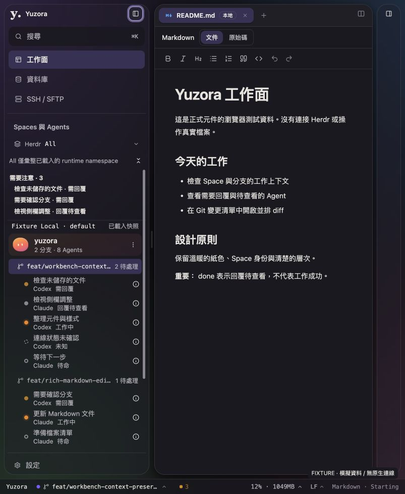

2026-09-08 · Production UI 變更紀錄Logo 與控制鈕回到側欄，工作面移至頂端
移除獨立 top-bar。左側欄頂部容納 Logo、Yuzora 名稱及左側收合按鈕；右側工具欄頂部容納名稱與右側收合按鈕。中央工作分頁距視窗頂端 8px，相較前版釋放 40px 的垂直空間。
收合與視窗控制
收合後保留 48px 細窄側欄與展開按鈕；macOS 左側保留 88px，以容納真正的 AppKit 紅綠燈。內容區保持掛載並透過 hidden／inert 隱藏，控制鈕不在隱藏區域中，避免收起側欄後失去入口。左側寬度、右側寬度與雙側背景偏好均沿用。
視窗拖曳區移入側欄標頭和品牌文字；一般操作按鈕仍使用 shadcn Button。macOS 控制預留區依既有 x22／y27 配置，未繪製假的紅綠燈，也未變更 Native config。此次未重新載入使用中的原生 App，因此控制按鈕與拖曳的更新後原生 GUI 仍待驗證。
已驗證
| 項目 | 證據 |
|---|
| 測試與建置 | AppShell、AppShell.layout、panels 共 3 個測試檔、69 項測試通過；build 與兩份 TypeScript config 通過；lint 0 errors、56 warnings；git diff --check 通過。 |
| 掛載與焦點 | 測試涵蓋兩側收合／恢復、隱藏內容、控制鈕持續可達、Editor buffer 與 Space 元件不重建、模式切換及 macOS 88px 控制預留區。瀏覽器以 Enter 收合左側後，焦點仍在「展開左側導覽」。 |
| 真實瀏覽器操作 | 點擊／鍵盤展開與收合兩側、打開設定、切換 dark、確認背景偏好保留。右側展開後原 README 仍在。資料皆為 fixture，未操作 live Herdr 或真實檔案。 |
| 1440×900 DOM 量測 | 左側 288px、中央 852px、右側 264px；三區頂部皆 y8。兩側標頭 y13、高 28px。Document width 為 1440px。 |
| 1024×768 DOM 量測 | 左側 288px、中央 654px、右側收合為 48px；展開按鈕寬 28px，document width 為 1024px。 |
| 720×480 DOM 量測 | 瀏覽器中的兩側皆收合為 48px，中央 592px；兩個展開按鈕寬 28px 且不在 inert 區域。Document width 為 720px。此為非原生 fixture，不代表 macOS 88px rail 下的中央寬度。 |

803×978 的 dark／violet 瀏覽器 fixture。可見的控制鈕外框為鍵盤焦點提示。原生交通控制未在此 screenshot 模擬。
交付範圍
src/app/AppShell.tsx 擁有兩側標頭與收合區域；src/app/workbench/WorkspaceToolsPanel.tsx 專注於工具內容；workbench-shell.css 調整整體配置。更新 appShell.test.tsx 與 AppShell.layout.test.tsx。沿用現有 zh-TW／en 控制文案。
最新版已建置並同步到 dist。瀏覽器隔離測試頁已更新並保留；原生 App 下次重新載入前端時生效。未強制重載使用中的原生 terminal，未改 demo、Native code 或進行 Git 寫入。HEAD 仍為 711342825480a2edd5eb79005554ce828177e245。
本回合未重跑全產品測試、原生 Terminal／Preview 輸入驗收、實際 200% zoom 或完整色彩對比矩陣。驗證日誌位於 output/sidebar-chrome/{tests,build,lint}.log。